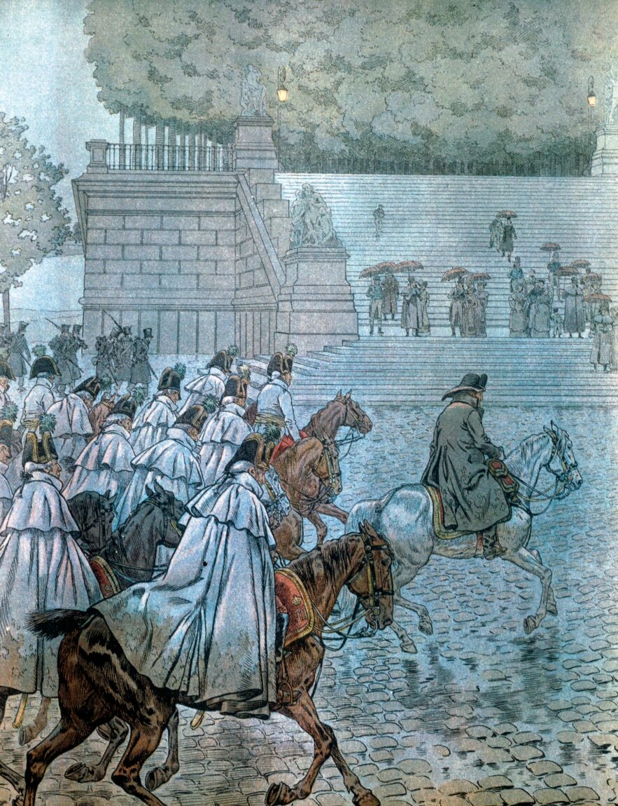
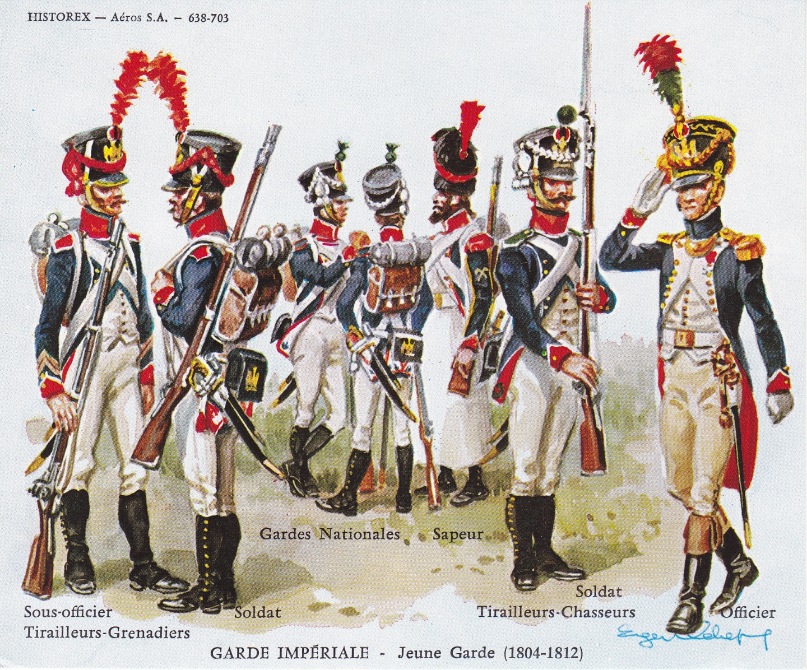
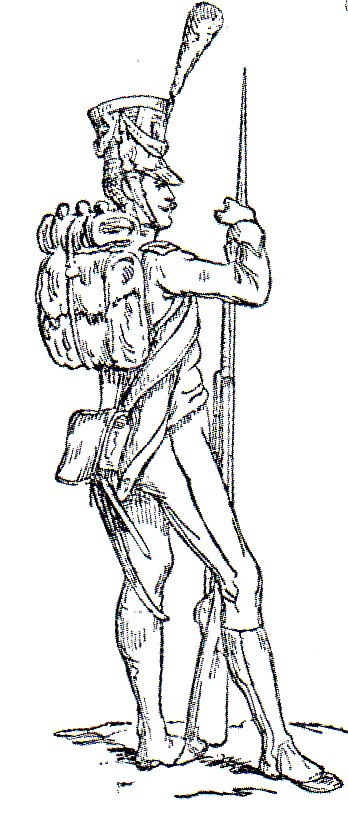
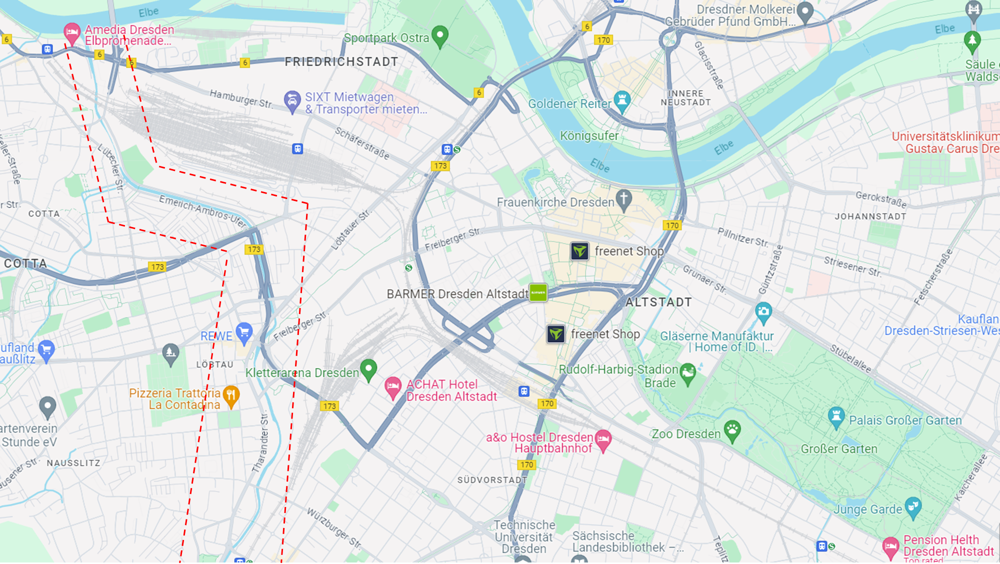
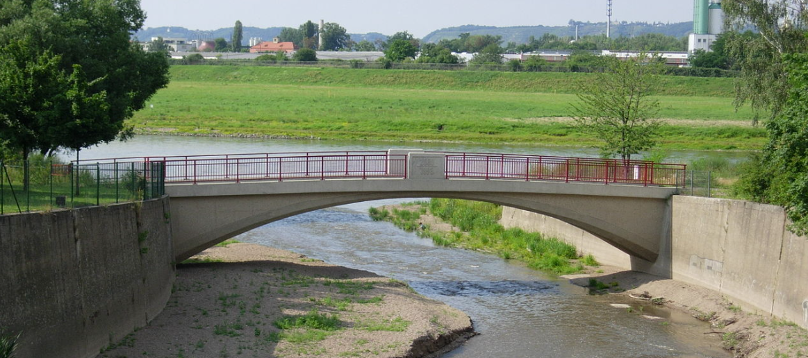
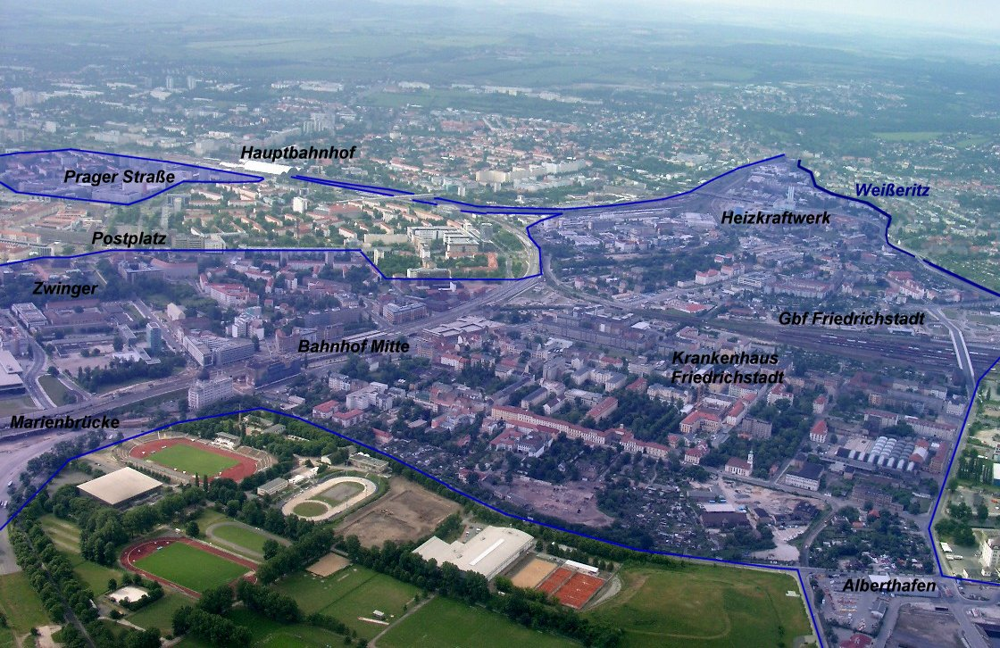
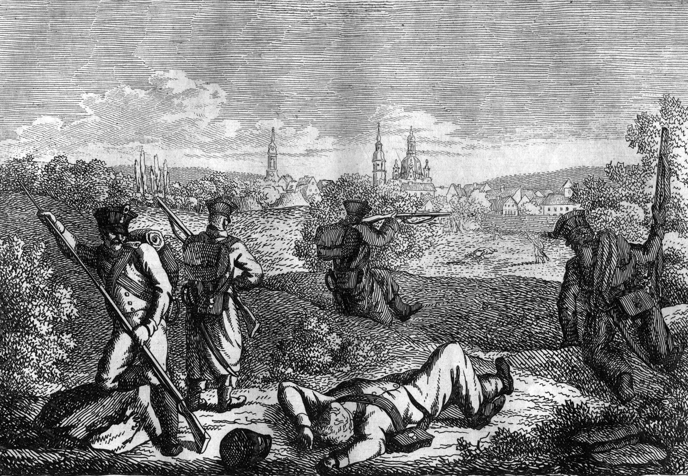
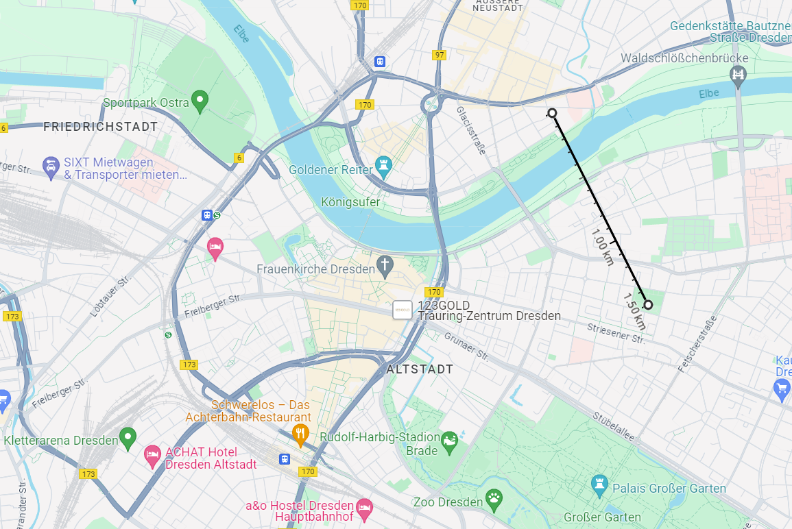
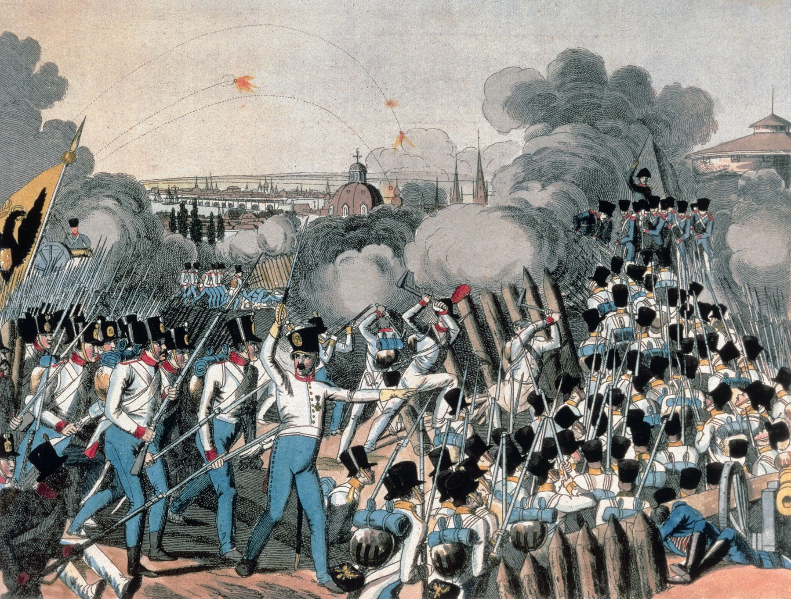
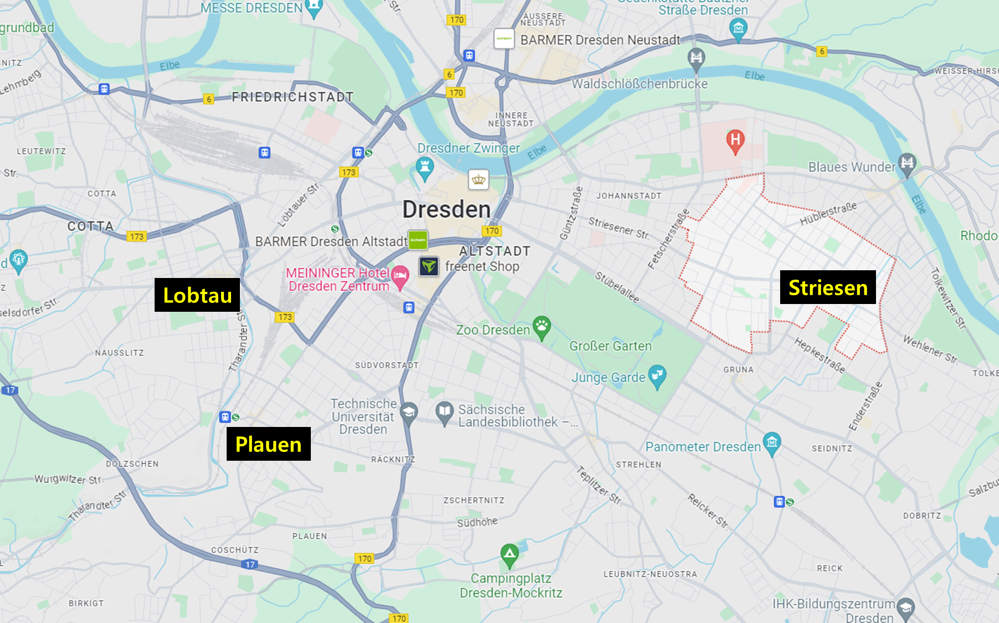

드레스덴 전투 (7) - 혈전
게시: 2024-04-01T06:30:41+09:00
이렇게 열렬한 환영을 받으며 입성했으나, 나폴레옹은 그런 환대에 즐거워할 상황은 아니었습니다. 그는 숨돌릴 틈도 없이 전황 파악 및 방어태세 점검과 전투 준비에 들어갔습니다. 탁상공론에 시간을 다 보낸 보헤미아 방면군 수뇌부와는 달리, 나폴레옹은 일사천리로 그 모든 것을 해냈습니다. 그는 드레스덴 방어선의 지휘는 계속 생시르가 맡도록 하고, 시 외곽에서 보헤미아 방면군과 전투를 벌일 야전군을 편성했습니다. 그가 끌고온 근위대는 그가 입성한 지 약 1시간 뒤에 줄지어 노이슈타트로 입성했는데, 그는 이들을 총 3개 부대로 편성했습니다.

(8월 26일 아침, 소수의 참모들과 함께 드레스덴에 입성하는 나폴레옹의 모습입니다. 그 모습을 구경하는 시민들이 우산을 쓰고 있는 것으로 그려졌습니다만, 사실 이건 약간 부정확한 것입니다. 26일 당일엔 비가 오지 않았습니다. 다만 27일부터 내리기 시작한 여름 비는 꽤 중대한 결과를 가져옵니다.)
먼저 프랑스군의 좌익, 즉 그로서가르텐 방면에는 신참근위대(쥰느 가르드, Jeune Garde, Young Guard)의 2개 사단이 배치되었고, 여기는 모르티에가 지휘를 맡았습니다. 중앙부는 나폴레옹이 무리수를 두며 제3군단으로부터 떼어내어 데려온 네가 맡았는데, 여기에도 신참근위대 2개 사단이 배치되었습니다.

(원래 근위대는 신체 조건뿐만 아니라 경력 등의 측면에서 선발조건이 매우 까다로왔습니다. 그런 조건을 모두 만족하는 병사들은 당연히 나이도 꽤 많았고 숫자도 적었습니다. 나중에 근위대가 확장되면서 기존의 근위대는 자연스럽게 고참 근위대(비예유 가르드, Vieille Garde, Old Guard)가 되었고, 경력은 없더라도 신체 조건을 제대로 갖춘 병사들을 선발하여 새로 편성한 근위대를 신참 근위대라고 불렀습니다. 신참 근위대라는 것은 그러니까 호칭일 뿐 정식 부대 명칭은 아니었습니다. 1809년 최초로 편성된 신참 근위대의 부대 명칭은 Tirailleurs-Grenadiers (띠라이외르-그르나디에, 저격 척탄병)이었고, Tirailleurs-Chasseurs (띠라이외르-샤쇠르, 저격 엽병) 등의 부대가 이후에 연이어 창설되었습니다. 신참 근위대는 고참 근위대의 유명한 곰가죽 모자를 쓰지 못했습니다.)

(이 신참 근위대 소속 저격 척탄병의 스켓치는 프랑스군 장교이자 작가이자 언론인이자 박물학자였던 아돌프 드 쉐늘(Adolphe de Chesnel)이 그린 것입니다. 필명이 아돌프일 뿐 실제 이름은 Louis-Pierre-François de Chesnel de la Charbonelais이었던 쉐늘은 1813년 당시 22세의 젊은 장교였고, 불과 29세였던 1820년에 중령 계급으로 퇴역했습니다. 이후 그는 이런저런 신문사를 창간하여 활동했고, 온갖 것에 대해 글을 쓰고 책을 내는 박물학자이자 작가로서 살았습니다.) 나폴레옹이 특별히 신경을 쓴 부분은 프랑스군의 우익, 즉 드레스덴 서쪽 프리드리히슈타트 마을 방면이었습니다. 여기에는 원래부터 드레스덴 방어를 맡고 있던 제14군단에서 1개 사단, 그리고 드레스덴에 파견 나와 생시르의 지휘하에 있던 제1군단 소속 1개 사단이 차출되어 배치되었습니다. 아무래도 근위대에 비해 병사들의 체격부터 장비, 보급품, 사기 등등 모든 면에서 일반 군단병들이 떨어졌다는 것을 감안하면 이 곳의 병력 배치가 가장 약해보입니다. 그러나 중요한 것은 그런 보병사단들이 아니었습니다. 여기엔 그 2개 사단 외에도, 이번에 나폴레옹이 함께 끌고 온 라투르-모부르의 제1기병군단이 함께 배치되었습니다. 그러니까 당시 나폴레옹에게 가용했던 기병 전력을 여기에 모두 몰아서 배치한 것인데, 이건 이 프리드리히슈타트 마을을 공격하는 보헤미아 방면군 좌익과 중앙부가 바이서리츠(Weisseritz) 강으로 인해 분단되어 있다는 것에 착안한 것이었습니다. 기병은 결국 기동력을 이용해 적의 측면을 들이쳐야 하는데, 담장이 쳐진 그로서가르텐이 주된 전장인 좌익보다는 우익쪽의 지형이 기병대의 배치에 유리하다고 본 것입니다. 이들 대부분은 새로 편성된 기병들로서 경험과 숙련도에서 무척 떨어지는 신병들이었습니다만, 이들의 지휘는 역시나 기병전의 대가인 뮈라가 맡았습니다. 이 병력 배치는 결국 나중에 톡톡히 성과를 거둡니다.

(바이서리츠강의 위치를 보여주는 구글 지도입니다. 강의 위치를 잘 보실 수 있도록 바이서리츠를 따라 빨간 점선을 강 양쪽으로 그었습니다.)

(바이서리츠강은 강이라기보다는 시냇물에 가까운 수준이었습니다. 평소에는 사람이 걸어서 건너는 것이 어렵지 않았으나, 비가 오면 말을 타고서야 건널 수 있는 수준이었습니다. 이 사진을 보면 이 시냇물의 규모를 짐작하실 수 있을 것입니다.)

(바이서리츠강의 위치와 프리드리히슈타트, 그리고 드레스덴 시내의 상대적인 위치를 보여주는 사진입니다. 저 항공사진을 찍은 위치는 엘베강 상공에서 찍은 것이고, 그러니까 북쪽에서 남쪽을 쳐보다고 찍은 것이라고 보시면 됩니다. 저 사진 중앙의 Bahnhof Mitte라는 것은 기차역으로서, 저 위치는 당시 드레스덴 성벽 남서쪽 외곽 지역입니다. 참고로 저저 사진에서 보라색이 칠해진 구역은 약간 저지대로서 엘베강에 홍수가 나면 물에 잠길 수 있는 지역입니다.) 그런데 이렇게 놓고 보면 나폴레옹이 새로 투입한 병력은 기병군단 하나와 신참 근위대 4개 사단 뿐이었습니다. 머릿수로 따지면 고작 3~4만 정도에 불과합니다. 나폴레옹 근위대의 핵심 전력은 고참 근위대였는데, 그들은 어디로 간 것일까요? 일단 고참 근위대는 최소 10년 이상 복무한 덩치 좋은 30~40대 베테랑들로만 구성되었으므로 숫자가 많지 않았는데, 이들은 시내에 예비대로 남겨두었습니다. 이 조치는 나폴레옹 당시 전술의 핵심이었습니다. 중앙에 정예 병력을 예비대로 배치해두었다가 적이든 아군이든 어느 방면이 무너지면 재빨리 그 쪽으로 투입하여 구멍을 틀어막든 반대로 적진에 뚫린 구멍으로 돌격하도록 하는 것이 당시 유행하던 전술이었던 것입니다. 다만, 기존 방어선을 지키던 제14군단 병사들은 물론이고 신참 근위대조차도 대부분은 경험이 부족한 신병이었으므로, 이들을 보강할 고참 병력이 필요하다는 생각에 고참 근위대에서 3개 연대를 뽑아 각각 하나씩 좌-중-우 3개 방면에 배속시켰습니다. 근위대에는 이런 보병들뿐만 아니라 자체 기병대도 있었습니다. 그러나 근위 기병대는 26일 아침에는 도착하지 못했고, 그날 밤에나 현장에 도착했습니다. 나폴레옹이 입성하여 드레스덴 시내에 '비브 랑페뢰르' 소리가 울려퍼질 때, 보헤미아 방면군이 총공격에 나섰다면 그래도 보헤미아 방면군이 승리했을 가능성이 컸습니다. 아무리 천하에 나폴레옹이라고 하더라도 위에서 언급한 병력 배치를 계획하고 완료하는데는 적어도 2~3시간이 필요했기 때문입니다. 그러니까 변신로봇이 가장 취약할 때는 변신 순간이고, 나폴레옹군이 가장 취약할 때는 아직 전투 준비가 끝나지 않았을 때인데, 그 중요한 순간을 백분토론으로 날려버린 것은 정말 아쉬운 일이었습니다. 아무튼 오후 3시가 되어 보헤미아 방면군이 계획대로 공격을 시작했습니다. 연합군의 우익, 그러니까 프랑스군 좌익에서는 러시아군과 프로이센군의 공격이 나름 성과를 거두었습니다. 엘베 강변을 파고 들던 러시아군은 드레스덴 교외엔 렘헨 (Lämmchen) 마을까지 도달했고, 그로서가르텐에서 다시 공격을 시작한 프로이센군은 공원을 거의 다 장악하고 러시아군과 합세하여 그 너머에 있는 제2번 보루에 대한 공격을 시작했습니다.

(제2번 보루에 대해 공격을 가하는 러시아군 유격병들의 모습입니다.)
그러나 딱 거기까지였습니다. 프랑스군은 엘베 강변에 있던 풍차 언덕을 방어선으로 삼고 저항했는데, 러시아군은 아무리 노력해도 그 언덕을 넘을 수 없었습니다. 제2번 보루와 그 일대의 교외 주택가에 배치된 프랑스군도 러시아군과 프로이센군의 합동 공격을 거뜬히 막아냈습니다. 이렇게 러시아군과 프로이센군의 공격이 시원치 않은 결과를 내었다는 것은 아무래도 연합군의 포병이 더 근접하여 지원을 못했다는 것인데, 거기에도 이유가 있었습니다. 알트슈타트의 각 포대에서도 포격을 퍼부었지만, 엘베강 건너편의 노이슈타트 및 그 일대 강변에도 프랑스군의 포병대가 배치되어 강 너머 강변에 노출된 적군에게 포격을 퍼부어댔던 것입니다. 그러다보니 러시아군과 프로이센군의 포병대는 쉽게 근접할 수가 없었습니다.

(당시 프랑스군이 가장 많이 사용하던 12파운드 야포의 유효 사정거리는 약 1.5km 정도였습니다. 구글 지도에서 보시듯이, 엘베강 우안의 프랑스군 포병대는 좌안의 러시아군에게 얼마든지 포격을 퍼부을 수 있었습니다.) 그로서가르텐의 서쪽, 그러니까 보헤미아 방면군 중앙부에서는 프로이센군과 오스트리아군이 제3번 보루에 대해 정면 공격을 시도했으나 프랑스군의 강력한 포격을 받고는 무너져 내렸습니다. 하지만 워낙 수적 우위가 명백했던 보헤미아 방면군에서는 그 정도 피해에 굴하지 않고 새로운 병력을 계속 투입했습니다. 새로운 오스트리아군 2개 부대도 극심한 포격을 뒤집어 쓰고 큰 피해를 입었으나, 이들이 막 무너질 때 즈음해서 프랑스 포병대의 탄약이 딱 떨어지고 말았습니다. 보헤미아 방면군의 공격이 시원치 않았던 주된 원인은 막힐 것 없이 탁 트인 평원을 휩쓰는 프랑스군의 포격 때문이었습니다. 그런데 그 가증스러운 대포들이 포격을 멈추자, 오스트리아군은 거칠 것 없이 전진하여 마침내 보루의 벽에 달라붙는데 성공했습니다. 일이 이렇게 되자 프랑스군도 버티지 못하고 보루에서 퇴각하여 2차 방어선인 드레스덴 교외 주택단지로 물러났습니다. 오스트리아군은 파죽지세로 그 주택단지까지 쳐들어갔으나, 여기서 프랑스군은 총안을 뚫어놓은 주택들을 요새로 삼고 강력하게 저항했고, 오스트리아군은 그 방어선 안쪽으로 진입하지 못했습니다.

(제3번 보루에 대해 맹렬한 공격을 가하는 오스트리아군의 모습입니다. 도화선을 너무 짧게 설정했는지 공중에서 폭발하는 폭발탄(bomb)의 모습이 인상적이네요.)
제4번과 제5번 보루에 대한 오스트리아군의 공격은 더 좋지 않았습니다. 이 두 곳에 대한 공격은 큰 피해를 내며 실패했는데, 그나마 그 앞에 큰 건물이 있어서 원래부터 사격선 확보가 안 되어 있던 제4번 보루에 대한 공격은 한때 성공을 거두는 것 같았습니다. 그 가림막 역할을 하던 큰 건물 뒤로 접근하여 제4번 보루를 공격한 오스트리아군은 잠깐 제4번 보루를 점령하는 개가를 올렸습니다. 그러나 곧장 프랑스군 예비대가 투입되어 역공을 가한 결과, 제4번 보루는 다시 프랑스군 손에 넘어갔고, 오스트리아군은 더 이상의 전과를 올리지 못했습니다. 제5번 보루는 3번에 걸친 오스트리아군의 공격을 모두 어렵지 않게 격퇴했습니다. 아예 보루조차 없던 프리드리히슈타트 마을 쪽에서도 오스트리아군의 공격은 별다른 성과를 내지 못했습니다. 엘베강 우안에 배치된 프랑스군의 포격이 여기서도 위력을 발휘하여 오스트리아군을 제압했던 것입니다. 잠깐 동안이나마 오스트리아군 일부가 바이서리츠강을 넘어 프리드리히슈타트 마을 서쪽에 진입했으나, 이들은 자신들이 고립될까봐 곧 스스로 물러나는 추태를 보여주었습니다. 이런 식으로 보헤미아 방면군의 공격이 흐지부지 돈좌되는 동안 어느덧 시간은 계속 흘러 오후 6시가 되었습니다. 슬슬 해가 기울기 시작하자, 네, 모르티에, 뮈라의 3개 방면군은 일제히 반격을 시작했습니다. 특히 양측면에서는 엘베강 건너편에 배치된 포병대의 맹렬한 포격 지원이 동반되었고, 보헤미아 방면군은 마치 기다리기라도 했다는 듯이 무너져내려 아침에 출발했던 지점으로 밀려났습니다. 러시아군은 프로이센군 예비대의 도움을 받아 간신히 슈트리젠(Striesen) 마을을 지키는 선에서 버틸 수 있었고, 그나마 프로이센군은 그로서가르텐 중앙에 있는 궁전을 끝까지 사수해냈습니다. 오스트리아군은 영 모양새가 좋지 못했습니다. 중앙에서는 애써 빼앗았던 제3번 보루를 모르티에 휘하의 신참 근위대의 거센 공격에 다시 빼앗기고 말았고, 이들은 거의 플라우언 마을 언저리까지 밀려나야 했습니다. 바이서리츠강 서쪽에서도 오스트리아군은 후퇴해야 했고, 바이서리츠강에 접한 롭타우(Lobtau) 마을에서도 쫓겨나는 신세였습니다. 결국 전투는 저녁 8시 경이 되어 해가 지자 자연스럽게 그치게 되었는데, 이때 즈음해서 프랑스군은 그날 오전 공격이 시작된 이후 잃었던 땅을 거의 모두 되찾은 상태였습니다. 가만히 보면 확실히 프로이센군이 가장 열심히 싸웠고, 그래서 그러서가르텐의 절반은 여전히 프로이센군이 점유하고 있었습니다.

(26일 밤 무렵 양측이 대치한 지점들의 위치입니다.)
이때 나폴레옹은 혹시나 보헤미아 방면군이 밤 사이에 모조리 철수해버리는 것 아닌가 조바심을 냈다고 합니다. 그러나 전투는 그 다음날에도 계속 이어질 운명이었고, 밤 사이에 양측은 각각 증원군을 받게 됩니다. 그러나 가장 중요한 변화는 저 남쪽, 그리고 하늘에서 벌어지게 됩니다. Source : The Life of Napoleon Bonaparte, by William Milligan Sloane Napoleon and the Struggle for Germany, by Leggiere, Michael V With Napoleon's Guns by Colonel Jean-Nicolas-Auguste Noël https://warfarehistorynetwork.com/article/napoleons-last-great-victory-the-battle-of-dresden/ https://en.wikipedia.org/wiki/Battle_of_Dresden https://fr.wikipedia.org/wiki/Jeune_Garde http://www.historyofwar.org/articles/battles_dresden_26_aug.html https://en.wikipedia.org/wiki/Imperial_Guard_%28Napoleon_I%29 https://fr.wikipedia.org/wiki/Adolphe_de_Chesnel https://www.scalemates.com/kits/historex-638-tirailleurs-grenadiers-garde-imperiale-1809-1812--1221509 https://en.wikipedia.org/wiki/Wei%C3%9Feritz